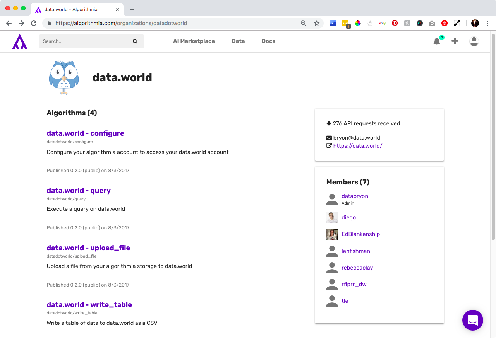
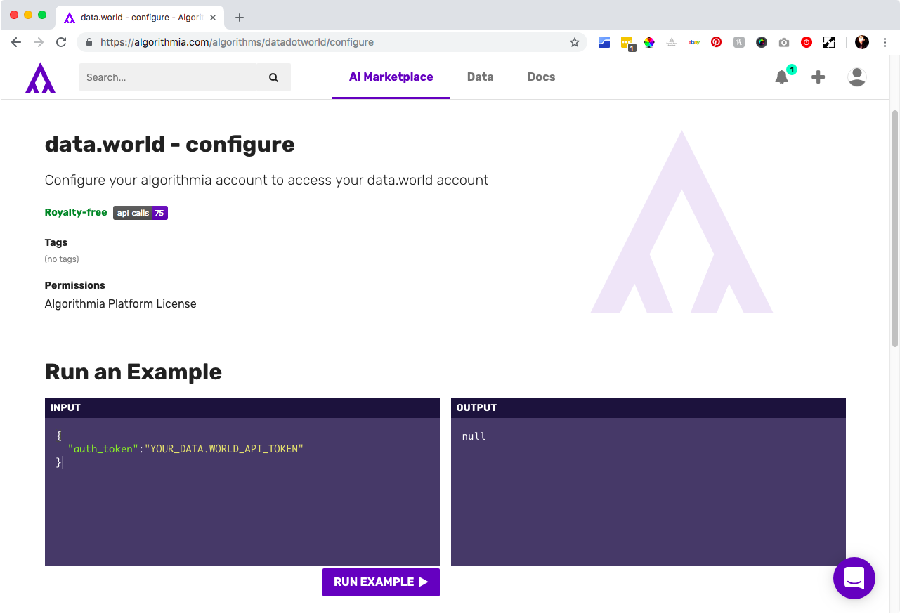
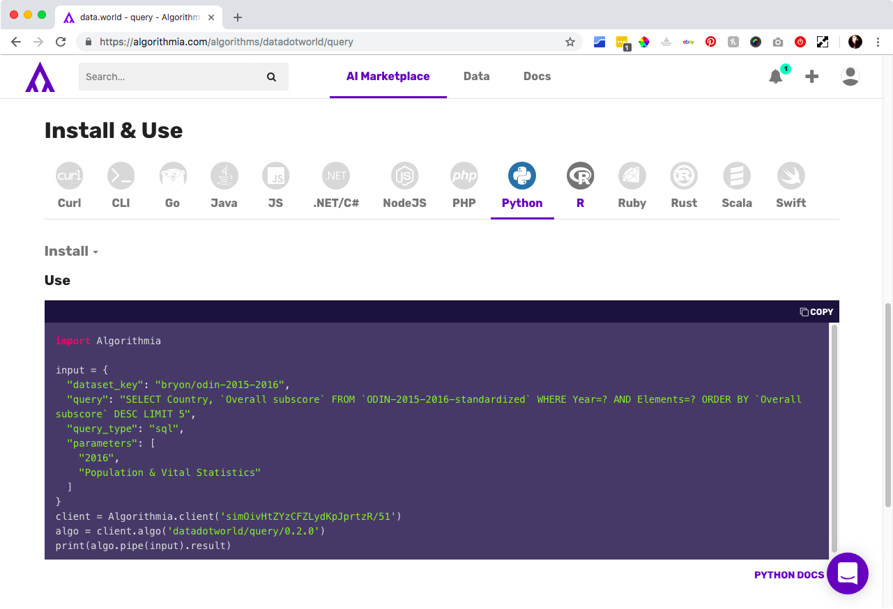

Configure Algorithmia with your data.world token.
Using the configure algorithm, you can save your API token for later use on Algorithmia:
- Create an account and login to Algorithmia.
- Navigate to the data.world organization on Algorithmia.

- Choose the Configure algorithm.

- Enter your API token and click Run Example.
- Proceed to the query of your choice, you can choose to:
Each algorithm has a pre-populated example in the input box, where you'll be able to see the output of the algorithm.
- Once you're satisfied with the results of your algorithm, scroll down and choose your desired language, copy the code, and run in your program of choice.
